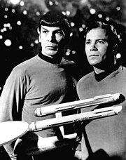
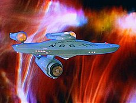
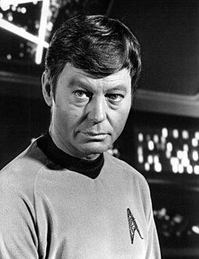
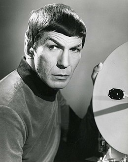
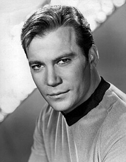
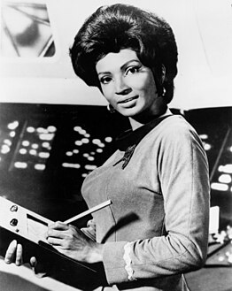

Course: Science Fiction & Religion
Lecture #4: The Meaning & Philosophy of Star Trek
Whether you are a Star Trek fan or not, the fact is that Star Trek has had the largest following of any science fiction, or for that matter, any TV show in history. In fact, in polls 53% of Americans rate themselves as Star Trek fans. We must ask why is that so?
It is a phenomena which has literally become international in scope. When it went into syndication in the early 70's over 60 other countries, besides the US showed it, many still do, with dubbing into the native languages.
Every novel written in the ST universe has become a best seller. Even in China, where they agreed to show 2 hours of American TV a week, they chose ST as one of those (the other, I understand, was Marcus Welby, MD). Note: one must ask what influence has it had on the pro-democracy movement in China.
What I hope to do through this lecture and film clips is deal with why this is so. What is it that appeals to us so deeply. We will try to explore this from the view point of Rodenberry’s philosophy and from Jungian psychology. Or, to put it another way, from the conscious and unconscious levels.

RODDENBERRY'S PHILOSOPHY
In the classic Star Trek, as its now called we have a black female Lieutenant, An Oriental helmsman, A Russian ensign, a Southern WASP doctor, a Scottish engineer and a half human/half Vulcan 2nd officer. Yet these all work together as a cohesive group, a mini United Nations. Gene Roddenberry says this:
"I think Star Trek was a first in television, having a mixed, international crew of various colors and ideas and cultures and philosophies. It just seemed to me most implicitly obvious that if mankind makes it into the next century all of those things that have divided us--color, race, religion, culture, and so on--can no longer divide us. Petty nationalism has got to go. We will not make it unless we have begun to cherish the differences between people, instead of being afraid of them. I think variety gives life a lovely quality: Irishmen and Jews and blacks and Asians, all bring a fascinating kaleidoscope of wonderful things. It just seemed obvious to me that that's what we at Star Trek had to do."
Gene points out that in the 60s it was at times hard to get ideas and values past the censors who wanted nothing controversial to be aired. However, he managed to do it anyway, however camouflaged they might be.
In letters written to Roddenberry, especially in the 70s when it went into syndication, it is clear that the show really made an impact on people, in many cases giving them a hopeful attitude about the future, ending discrimination, and in one case a Benedictine nun wrote that . . "the enterprise is an exploration into God." Father Andrew Greeley agrees with her, saying that when that show was taken off, one of the only shows with any value was gone.
There are several things which, as I see it, constitute the value and philosophy of Star Trek. I will try to deal with these.
THE PRIME DIRECTIVE:
AKA as General order # one: This forbids anyone from interfering with the natural development of an alien civilization. It is often violated when danger to the alien people or the Federation itself is imminent, although at times even that is not considered a good enough reason to interfere.
The basic principle then is that each person or species, no matter how alien, has the right to live their lives as they wish. (as long as they're not trying to take over the galaxy or eat you or something.)
In many cases both Kirk and Piacard disobey the Prime Directive but not arbitrarily: the lesson is that Beings are more important than rules. Enforce the spirit of the law above the letter of the law. The prime directive was instituted to protect societies, human and otherwise, and when the directive gets in the way of protecting, ignore it.
ANTI DISCRIMINATION
The anti-prejudice theme is found in many of the classic trek series. The first one to really deal with bigotry as such was "Balance of Terror" in which it is discovered that the Romulons and Vulcans are related.
SHOW: Clip. "Balance of terror" 1:40
Many others deal with this theme also such as "Let this be your last battlefield" where 2 half white/half black races destroying each other all because their colors are on opposite sides of the body. a distinction the crew misses until told:
SHOW: clip where it is pointed out why they are enemies--6mm
SEEK OUT NEW LIFE AND DON'T BE AFRAID
Very early this theme is brought up in "The Corbonite Manouver" were Baily must confront his fear of the unknown and discovers that it is not to be feared but examined, understood and accepted.
SHOW CLIP -- 2:10
THE IDIC IDEAL:
This is the real crux of what Roddenberry wanted to say and what he believed. This is the Vulcan Philosophy and means: "Infinite Diversity in Infinite Combination" It is symbolized by a circle with a triangle sticking through it. Spock wears the symbol on a necklace in the Classic episode "Is There in Truth No Beauty?"
It is the positive side of discrimination saying not only should one not be prejudiced but in fact, diversity is what really allows for creativity and should be embraced.
It is said Roddenberry created it to sell jewelry but that does not negate the basic principle for which it stands.
MEANING OF STAR TREK IN JUNGIAN TERMS:
What I have just discussed are things that are obvious on a conscious level. This does not account for the great popularity of the show. to complete the understanding of its hold on people we have to look at the psychological, ie, Jungian interpretation.
JUNG IN A NUTSHELL
Jung believed that, thru the senses, humans have experience of an objective reality but this is only part of what we learn. we encounter the inner world, just as real, thru dreams, intuitions and phantasies, which can be studied objectively.
Jung said a new view of the world is needed to comprehend the relation of both consciousness and the world of matter to experiences of the unconscious.
Humans are capable of two types of thinking: in scientific, philosophical, and theological demonstrations, conceptual thinking is used to convey ideas -- but humans can also think in images also.
This is the way the unconscious conveys its ideas, particularly emotional meaning thru art, drama, mythology which expresses it in ARCHTYPAL images.
ARCHTYPE is a prototype, an image which symbolizes some aspect of meaning in the unconscious, ex: Apollo is the archetype of the person of reason.
Every night in dreams the images from the unconscious come and represent meaning from the unconscious.
COLLECTIVE UNCONSCIOUS
Not only do we have an unconscious which is personal but we all have an unconscious that shows connections to each other and to symbols that have meaning around the world with no relationship in cultural context.
In dealing with patients, he found spontaneous visionary material that had nothing to do with the personal unconscious but reflected themes in mythology, even if the patient had not studied myth. In other words, archetypes which are shared by all humanity.
THE SHADOW is the archetype that collects every unknown element to itself and needs to be integrated into the conscious mind and is a source of great energy and inspiration.
ANIMAZANIMUS -The male and female element in all people which must be accepted for complete integration.
THE EGO is the stable center of consciousness and can forbid or deny an encounter with the shadow or collective unconscious. If this encounter is avoided the energy of the repressed contents adds itself to that of the repressing factor and out of this can develop the fanatical character of the "isms." This happened in Nazi Germany and happens whenever a religion says it will exclude all who don't agree with them. Only if the ego is stable can it handle the unconscious encounter.
Jung believed that evil was not just the absence of good but that humans are not by nature good but must war against evil directly to find out its nature and then either integrate it or reject it.
THE GOAL OF HUMANS is to become as conscious as possible so one can relate to the creative aspect of the unconscious and allow it to guide and transform them separating one out from the destructiveness of elemental evil.
PROJECTION if all this remains unconscious it is projected onto other--individuals, races, religions not like us, etc. this is the source of fanaticism.
Jung said we will never have peace on Earth until all people withdraw their projections.
Why all this? because I believe a part of the great appeal of Star Trek (ST) is the way it uses archetypes and appeals to the unconscious of people in ways of which they are unaware.
One of the assumptions in ST is that people have been able to "withdraw their projections" and peace, not only on Earth but in the Federation as a whole is a reality.

The Enterprise
One of the appeals of ST is the ship itself. It is composed of a circle and 3 cigar-shapes. Roddenberry did not intellectualize the ship but did spend a great deal of time and effort on the shape watching it evolve thru many stages until it finally "felt right"
The Circle represents the female aspect as well as unity, nurturing and totality, ie a MANDALA, an Indian word meaning "magic circle". the circle is found in India, Tibet, native American sand painting, etc. It is also found in the drawings of psychiatric patients Jung encountered.
The symbolism of the bridge of the Enterprise is reinforced with each episode which usually opens and closes there. Thus the plot of most episodes is circular. Beginning on the bridge, they go out to encounter whatever adventure awaits and then return to the harmony of the bridge, usually ending with a laugh.
The three cigar shapes, are of course, phallic symbols. the male element which propels the ship into whatever adventure is to be, ie the active principle.
In short, just as the Mandala is a structure of the psyche, so the feminine as an idea becomes articulated into machines created by human consciousness and therefore hierarchy, order, work, intention and decision.
Thus ST turns away from outward notions of the feminine as unconscious and makes the feminine something humans can consciously understand and construct.
This is a large part of ST's appeal to women and a reason why the model of the Enterprise is the most widely sold model spacecraft in history.
A Mandala has to have a center thru which consciousness and unconsciousness are united. The Captain, serves this purpose.
He (or she) is surrounded with four ways of perceiving things which Jung identified as (1) perception by the SENSES, (2) analysis by the INTELLECT. (3) evaluated by FEELING, and (4) INTUITION to understand implications and find solutions
SHOW Clip: “Loud as a Whisper" -- Functions carried by 3 people & center-4mm
In the classic Trek, Kirk is surrounded by all these in various crew personal: (I will use exclusively classic Trek for this analysis as they are most familiar to people and have the best examples of what follows.)

McCoy emerges thru many episodes as a repository of the positive feminine from the past. His instinctive responses are emotional and intuitive. He values the FEELING aspect of personality oriented towards the traditional Judeo/Christian heritage where love as self-sacrifice prefers the ease of unconscious union. In a Jungian sense McCoy is the "Mother."
The ongoing tension between McCoy the Mother and McCoy the Scientist give both three dimensionality and vitality to his character.

Spock is the one who opens the way to the future. He represents the mind, the intellect, the alien. In Spock's parents we find dramatized his inner conflict: Vulcan intellect versus human feeling.
Vulcan was the smith of the Roman gods, master of fire.
Fire with its heat and light transforms matter and illuminates darkness. This is also Spock's roll as first officer
Spock is supremely conscious. In Jungian terms he is sensation/thinking type -- representing the masculine mind.
In Spock, traditional heterosexual love becomes thru him more spiritual than physical. Spock helps transmute love from physical to psychic significance. The result of this is that Spock is actually more compassionate than McCoy in many ways. In the episode OBSESSION Spock spontaneously goes to Ensign Garrovick's cabin and reassures him that fear before the unknown is entirely normal, helping to free him from paralyzing guilt. Much more helpful than McCoy's command to "EAT".
It is the episode THE MENAGERIE which shows the length Spock will go for love of another, in this case Capt. Pike. Pike, seriously disabled in an accident, is taken, at risk to his career, by Spock to the planet Talus IV. This was a capital offense, but Spock was willing to risk it for Pike's happiness since the gift of illusion would free him from his paralysis.
Spock takes over the starship and guides it on the basis of what only he can know (by being in touch with the Talosians). Humans are forbidden there because they lose a grasp on reality because the power of mind so dominates there. Spock as half Vulcan can reach out to the unknown and relate it to what we know. Spock can have access to both worlds, the transcendent and the immanent, the known and unknown. He alone can directly contact aliens thru the mind meld. Through his human side he can make known what would otherwise remain in the dark.
Supremely conscious, Spock is a link with the unconscious; Archetypally masculine, he opens a new door for the feminine. Because of his special relationship with a the feminine and the future, he has special appeal to women.
Women have been characterized as the evil temptress. Eve, the prototypical female who is responsible for the fall of the human race. Eve is simply asserting her individual sexuality, given the sexual significance of the serpent. This is the first step in psychological differentiation.
Spock demythologizes Eden in the episode THE WAY TO EDEN by bringing to consciousness the fact that the "Eden" dreamed of with no labor, competition, or need for order, no self-consciousness or responsibility, only appears attractive; in actuality, it proves uninhabitable.
PARADISE comes from the Persian word meaning not "garden" but "wall" or "enclosure". In the final shot, the space hippies are seen huddling inside the shuttlecraft and we see that the paradise they sought is an enclosure constructed by the human mind, just as the circle. Their dream of an undifferentiated unity without walls or distinctions is an idealization of unconsciousness and finally death.
Star Trek represents as much of an innovation as does Spock. It has taken historically and psychically opposed forces and placed them in a new relationship to each other. Whereas death awaits one on the planet Eden, the tree of life grows within a walled garden, and life goes on inside the walls of the Enterprise, within the structures of the human psyche.

Kirk -- while McCoy represents the past, and Spock the future, Kirk is the solution for the present. It is he that is the agent for unifying opposing realities and transforming this tension into the energy needed to accomplish the ship's mission.
Both Spock and McCoy contribute to what Kirk needs to resolve any given situation. In Jungian terms, Kirk has access to all four psychological faculties. Spock: sensation and intellect, McCoy: intuition and feeling.
Sometimes, as in the episode THE LIGHTS OF ZETAR these four faculties are in four people with Scott representing the sensation, Mira Romaine the intuitive, McCoy feeling and Spock intellect. In the final scene, all four of these inform the decision Kirk must make. In the end Mira and the Enterprise are simultaneously restored to balance.
Kirk shows strength in all four of these faculties which is why he is a good captain (whatever you may think of Wm. Shatner).
In episodes like THE CHANGLING, THE ULTIMATE COMPUTER, THE RETURN OF THE ARCHONS, & WHAT ARE LITTLE GIRLS MADE OF, he uses his intellect with great expertise to outsmart machine logic [SHOW: Clip From "Changling " 4:20] He even uses his intellect to create illogic in I, MUDD to cause the androids to burn themselves out [SHOW: Clip-5:30]
In THE CONSCIENCE OF THE KING Kirk insists on verifiable certainty in knowing if Karidian, an actor, is really Kodos, a mass murderer. In the episode BY ANY OTHER NAME he uses the fact that the Kelvins are not used to sensation to stimulate them into returning the ship to him.
FEELINGS are used consciously in THIS SIDE OF PARADISE when Kirk discovers that the power of the spores, which make people very happy and healthy but unproductive, can only be broken by strong emotion [SHOW: Clip @ 6mm]
INTUITION comes into play in the episode OBSESSION where he relies on his intuition or "hunch" about the creature they are pursuing. Other examples of this are found in ASSIGNMENT EARTH (whether to trust Gary Seven with a missile on the loose), THE CORBOMITE MANOEUVER, THE GAMESTERS OF TRISKELION AND A TASTE OF ARMEGEDDON. In all of these he had to rely on an intuitive flash which identifies the right long shot he should take.
[SHOW: CLIP From CORBOMITE MANUVER -- 1:30]
Thus it is in Kirk we have the complete, or well integrated individual, who can draw on any or all of these functions in a way unequalled by any of his crew.
Question: Does this hold true for Picard, Sisco or Janeway?

INNER DUALITIES
The world of Star trek returns again and again to map out human nature in terms of three opposites: Male and female, young and old, and good and evil or positive and negative.
Three episodes involve Kirk and his own confrontation with evil, age and the feminine.
THE ENEMY WITHIN deals with Kirk being literally torn in two, one half good, but ineffective, the other evil but dying. While divided he comes to realize that it is that so called evil part which enables him to make decisions and command. Without that, he cannot make necessary decisions.
Numerous non-Christian traditions depict opposing principles like those dramatized in this episode as two sides of a single arch which survives precisely because of balance between internal tension, (the yin/yang in China is a good example). But Judeo-Christian values are very hard on the negative principle, which is identified as devilish and worthy only of eradication.
This episode shows how that negative side is necessary to Kirk's wholeness. By consciously embracing his negative side, which most western values lead us to deny, he knows where his strength comes from. This is a very effective episode and has been used in psychotherapy for years.
[SHOW: Clip 4:45] -- This, the only one I will use dealing with dualities.
YOUTH/AGE -- THE DEADLY YEARS
By recalling youth and reflecting on old age, one realizes that each individual is really many people. The present is part of a continuum in time along which one can take many forms as well as meet other life forms. An appreciation of the "others" that are potential or probable parts of one's own life trajectory leads to an appreciation of otherness in alien life forms.
The mission of the Enterprise, which is to make contact with such forms, implies a willingness to move outside of the illusion of one's stability of self in time as well as to explore space.
One aim of the voyage is to transcend egocentricity as much as ethnocentricity.
MALE/FEMALE -- THE TURNABOUT INTRUDER
Nowhere is the illusion of one's stable identity more tenacious than in sex differences. Although everyone admits times of moral temptation or aging few will admit finding room for their sexual opposite.
Dr. Janice Lester, jealous of him as a captain, trades bodies with him. Only Spock can perceive kirk in the female body until "kirk's" bizarre behavior gives away to the rest of the crew that Kirk is not really Kirk.
Trading bodies for viewers and crew is hard to accept as it implies a violation of the sacredness of masculine or feminine identity.
This is why most the episodes turned instead on Kirk's relationship with an alien woman who on closer examination turns out to be a projection of his feminine side, his anima, to use Jung's term. What men cannot accept in themselves becomes a script women must act out. The opposite is true, (though found only in one classic Trek, we'll deal with later) that what women cannot accept in themselves is projected onto men who must fulfill a script.
Other episodes dealing with these dualities are positive/negative: MIRROR, MIRROR which postulates a parallel universe opposite the Federation. They are the empire and conquer not befriend various races.
The positive Enterprise crew members can function positively in the negative world, but their negative counterparts cannot do so and end up in the brig.
This mirror universe has appeared in DS9 as well as many novels and graphic comics because of its appeal.
THE SAVAGE CURTAIN is a staged duel between 4 evil and 4 good characters to see which is really the stronger, good or evil. The rock creature does not see much difference but what does come out is that the negative side of human nature is also the fearful side, as ready to flee as was the negative Kirk.
DAY OF THE DOVE deals with a bodiless being that lives off negative energy. The Klingons and Federation are at each other’s throats, artificially generated by this being. However the point is that Given the polarities of good/evil a person or Klingon, can choose, once he or she understands the alternatives, to find in them a source of strength rather than a race to destruction.
THE ALTERNATIVE FACTOR deals with the idea of parallel universes, one matter, one anti-matter. Two identical men named Lazarus, one paranoid, one sane, are fighting each other. They can exchange worlds thru a rip in space where there is a corridor. If the two meet outside that corridor it means the end of everything--including both universes--as when matter and antimatter meet.
In this episode the balanced dynamism extends even beyond the edges of our universe. From this we see the best of the traditional views of the Christian dichotomy between God and the devil. For the universe itself to continue they must continue to coexist, just as the Klingons or Romulans and the Federation; just as the two Enterprises and just as each of us must in relation to our own personal demons, our enemies within. Each needs the other half to exist.
THE CORBOMITE MANOEUVER
I want to pick this up again in another context, ie, the young/old duality. He appears the only figure who explicitly reveals himself in the course of an episode as both old man and young boy.
As the old man, Balok toys with the crews’ feelings of terror and guilt by giving them only a few minutes to live. Upon beaming aboard Balok’s ship it is revealed that the old man was just a wooden dummy and the boy, Balok, was the only one aboard. However, the harsh old man functions as a screen onto which the crew project their various problems with authority figures, whether as fathers or sons.
The wooden dummy represents the accumulation of social prohibition, the perennial "Thou Shalt Not" and thus serves as a catalyst for fears and aggressions. Being only a dummy, his force can only come thru imbalance in a person's equilibrium.
Our Western heritage presents us with a cosmic drama in which father god and son are the essential actors; thus, any father/son relation which is projected upon the cosmos tends to have a certain religious resonance. In addition, an association of the father with wood recurs not only in Christianity but also in other images of the father gods: The erica tree represented Osiris; a fruit tree, Dionysus, the oak, Zeus; the cedar, Tammuz. Yahweh himself in Hosea 14:8 says "I am like a green fir tree. From me thy fruit is found."
Adam's fall comes from eating from a tree. Other "first men" in mythology fall by breaking off the boughs of a forbidden tree or approaching it to closely. The wooden Balok tries to make Kirk feel that encroaching on Balok's territory is a transgression comparable to the mythological fall and deserves punishment.
Kirk cooly confronts the old man and asserts his freedom. He then establishes a relationship with the child Balok. Baily learns from Kirk's example that overly aggressive action, whether turned inward or outward by hostility, could only destroy himself or others. Whereas the mythological father forbids knowledge, which is the fruit of the fall, Balok reveals himself as the child who willingly leads them thru the world of his knowledge.
THE SQUIRE OF GOTHOS -- male/female
In the end of the episode, twin lights appear as cosmic parents to apologize for their son's mischief. This doesn't contribute a lot to the episode except the idea that a large dimension exists where sexual duality finds a resolution.
The BERESHIT RABBA, a kabbalistic work, sees Adam and Eve as being created back to back, joined at the shoulders until YHWH divided them in two with an ax. The Earthly Adam was simply a reflection of the celestial two-sexed archetype; both heaven and earth were androgynous. The descendants of Adam and Eve, then, can find their true wholeness in joining the male and female elements which are necessarily part of every person.
"Spiritual perfection consists precisely in rediscovering within oneself this androgynous nature." This is what Jung had in mind when he talked about integrating the opposite side into ones person. For men, the Anima is the female part, for women, the animus, the male part. As long as that is unconscious, a person is not whole.
Because of our patriarchal society, which Star Trek reflects, the greater number of episodes deal with anima projections by the men (particularly Kirk) in the cast onto women who are one dimensional characters. Whether it is the insubstantial anima in SHORE LEAVE (ruth); the Android anima of REQUIEM FOR METHUSELAH; The obedient daughter anima of THE MARK OF GIDEON; The priestess anima in THE PARADISE SYDROME; Or the maternal anima in CITY ON THE EDGE OF FOREVER (Edith Keeler) all are insubstantial women who represent a projection of the male anima.
WOLF IN THE FOLD is the flip side of this. The mass murderer, Jack the Ripper, who is not human but another being who feeds on fear, has women as his victims because of their greater susceptibility to fear. They can't integrate their assertiveness and thus project outward onto others and become victims of the aggressiveness they can't acknowledge in themselves. Thus, the woman as the ideal of male fantasies is also the ideal anima victim.
Even though a man may not be perfectly masculine, or a woman perfectly feminine, their projected opposites tend to conform to the gender archetypes.
The less in touch the individual is with his/her internal contra sexual opposite, the more god-like and overpowering the projected anima or animus will seem.
WHO MOURNS FOR ADONIS is the one example of a woman, Lt. Carolyn Palamas, who manages to overcome her animus projection. Kirk commands her to treat Apollo as an anthropological study. This masculine mental activity distances her from her own internal feminine faculties of feeling and intuition and makes her able to reject him. Apollo is furious and weakened, the Enterprise is able to destroy his temple and he disappears.
Apollo, like Eden, is obsolete and his vanishing reminds us that in psychological terms he was above all an insubstantial projection of Carolyn's unconscious and unintegrated animus.
SPOCK AS ARCHTYPE
Star Trek offers a rich archetypal figure in the person of Spock. By being half alien, half human he can mediate between the conscious mind and the hidden unconscious. His specialness comes from association with a superior world of the mind.
The logic with which Spock controls his emotion contributes directly to his sex appeal to female viewers. He is not an authority figure, unlike the animus figures Emma Jung encountered in women's dreams.
He can always improve on the traditions passed on as holy on some planets as in THE PARADISE SYNDROME or the computer in FOR THE WORLD IS HOLLOW, & I HAVE TOUCHED THE SKY. His semi divine overtones consist in his being able to modify past bodies of knowledge and adapt them to an unprecedented present situation. He is not bound by social conventions.
Spock is probably more important as a role model for women than Roddenberry's original plan to have number one be a woman. Number one was a woman. 51% of us are women; Spock is an alien, part or all of us is alien. Number one would have been a role model for female success, but Spock is a challenge, especially for women. The challenge is how to realize oneself more fully.
Much credit is due to Leonard Nimoy who preserved the integrity of Spock. He can thus communicate religious implications that go far beyond the standard guru trip.
Spock point us to our own western heritage. Jung pointed out that in the West the locus of the tantric energy was in the head (not the gonads as in the East). He hoped that eventually there would evolve in the West a yoga which would reverse Tantric conceptions. The new yoga should lead one inward and down, where in fact, Spock takes us. Spock responds to the mating urge but transforms it into ritual signifying its psychic/spiritual significance.
Whereas previous deities have tended to trap women in a physical body or in social roles, Spock offers them a mind through which they might emerge into their own.
CONCLUSION:
In the past, mythological expressions of the human psyche were fixed in the framework of a given society at a given time. Certain myths and archetypes were central to a given cultures identity and if they changed at all it was only gradually over many generations. Such images were considered sacred scripture.
In the World of STAR TREK on the other hand, ranges across infinitely varied possibilities, past, present, and future. Each episode’s particular perspective is self-contained and stand in no essential sequential relationship to any other. Energies once tied to the symbols preferred by the perspective of a single society have been freed to locate themselves throughout inner as well as outer space. Thus, in a series of episodes, we can rage thru different times and spaces and encounter, on various other planets, archetypes previously thought by some human beings somewhere to reveal the essence of the universe.
Star Trek, instead of elaborating a single worldview, is a work in progress, the enterprise of individuation or soul-making. Multiple perspectives open before us and invite us to undertake our own enterprise; scripts have replaced scripture.
In Jung's terms, Star Trek presents us with the process of psychic evolution through which the conscious and the unconscious come together. It is, in fact, a living myth for today’s pluralistic society, hence, I believe, its great popularity.